Chapter 31: Soil and Plant Nutrition¶
Introduction¶
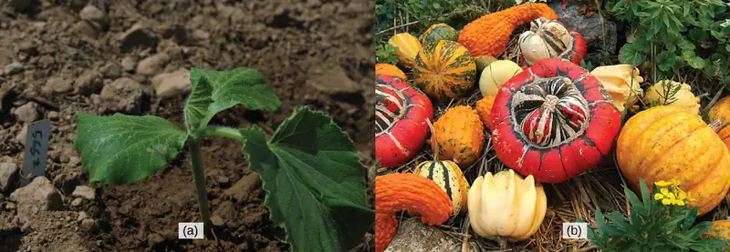
Cucurbitaceae is a family of plants first cultivated in Mesoamerica, although several species are native to North America. The family includes many edible species, such as squash and pumpkin, as well as inedible gourds. In order to grow and develop into mature, fruit-bearing plants, many requirements must be met and events must be coordinated. Seeds must germinate under the right conditions in the soil; therefore, temperature, moisture, and soil quality are important factors that play a role in germination and seedling development. Soil quality and climate are significant to plant distribution and growth. The young seedling will eventually grow into a mature plant, and the roots will absorb nutrients and water from the soil. At the same time, the aboveground parts of the plant will absorb carbon dioxide from the atmosphere and use energy from sunlight to produce organic compounds through photosynthesis. This chapter will explore the complex dynamics between plants and soils, and the adaptations that plants have evolved to make better use of nutritional resources.
31.1 Nutritional Requirements of Plants¶
Learning Objectives
By the end of this section, you will be able to do the following:
- Describe how plants obtain nutrients
- List the elements and compounds required for proper plant nutrition
- Describe an essential nutrient
Plants are unique organisms that can absorb nutrients and water through their root system, as well as carbon dioxide from the atmosphere. Soil quality and climate are the major determinants of plant distribution and growth. The combination of soil nutrients, water, and carbon dioxide, along with sunlight, allows plants to grow.
The Chemical Composition of Plants¶
Since plants require nutrients in the form of elements such as carbon and potassium, it is important to understand the chemical composition of plants. The majority of volume in a plant cell is water; it typically comprises 80 to 90 percent of the plant’s total weight. Soil is the water source for land plants, and can be an abundant source of water, even if it appears dry. Plant roots absorb water from the soil through root hairs and transport it up to the leaves through the xylem. As water vapor is lost from the leaves, the process of transpiration and the polarity of water molecules (which enables them to form hydrogen bonds) draws more water from the roots up through the plant to the leaves (Figure 31.2). Plants need water to support cell structure, for metabolic functions, to carry nutrients, and for photosynthesis.
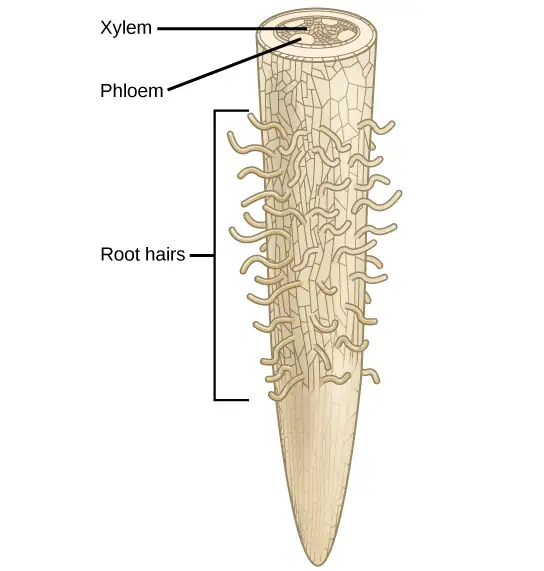
Plant cells need essential substances, collectively called nutrients, to sustain life. Plant nutrients may be composed of either organic or inorganic compounds. An organic compound is a chemical compound that contains carbon, such as carbohydrates, lipids, proteins, and nucleic acids and is made by a living organism. Carbon that was obtained from atmospheric CO2 is incorporated into organic molecules by plants and as such, composes the majority of the dry mass within most plants. An inorganic compound does not contain carbon (except CO2) and is not part of, or produced by, a living organism. Inorganic substances, which form the majority of the soil solution, are commonly called minerals: those required by plants include nitrogen (N) and potassium (K) for structure and regulation.
Essential Nutrients¶
Plants require only light, water, and about 20 elements to support all their biochemical needs: these 20 elements are called essential nutrients (Table 31.1). For an element to be regarded as essential, three criteria are required: 1) a plant cannot complete its life cycle without the element; 2) no other element can perform the function of the element; and 3) the element is directly involved in plant nutrition.
Table 31.1
| Essential Elements for Plant Growth | |
|---|---|
| Macronutrients | Micronutrients |
| Carbon (C) | Iron (Fe) |
| Hydrogen (H) | Manganese (Mn) |
| Oxygen (O) | Boron (B) |
| Nitrogen (N) | Molybdenum (Mo) |
| Phosphorus (P) | Copper (Cu) |
| Potassium (K) | Zinc (Zn) |
| Calcium (Ca) | Chlorine (Cl) |
| Magnesium (Mg) | Nickel (Ni) |
| Sulfur (S) | Cobalt (Co) |
| Sodium (Na) | |
| Silicon (Si) | |
Macronutrients and Micronutrients¶
The essential elements can be divided into two groups: macronutrients and micronutrients. Nutrients that plants require in larger amounts are called macronutrients. About half of the essential elements are considered macronutrients: carbon, hydrogen, oxygen, nitrogen, phosphorus, potassium, calcium, magnesium and sulfur. The first of these macronutrients, carbon (C), is required to form carbohydrates, proteins, nucleic acids, and many other compounds; it is therefore present in all macromolecules. On average, the dry weight (excluding water) of a cell is 45 percent carbon. As shown in Figure 31.3, carbon is a key part of plant biomolecules, followed by oxygen (45 percent) and hydrogen (6 percent), which are the next two most abundant elements in plants.
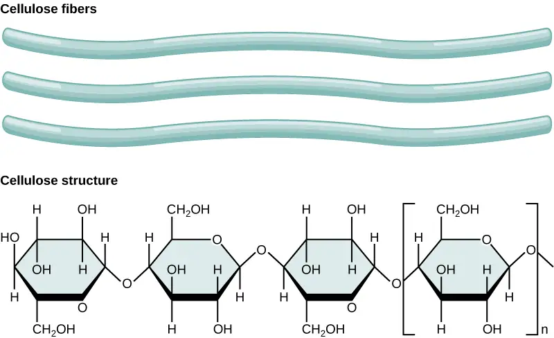
The third most abundant element in plant cells is nitrogen (N); it is part of proteins and nucleic acids. Nitrogen is also used in the synthesis of some vitamins. In addition to being macronutrients that are part of many organic compounds, hydrogen and oxygen also form water. Oxygen is necessary for cellular respiration; plants use oxygen to store energy in the form of ATP. Phosphorus (P), another macromolecule, is necessary to synthesize nucleic acids and phospholipids. As part of ATP, phosphorus enables food energy to be converted into chemical energy through oxidative phosphorylation. Likewise, light energy is converted into chemical energy during photophosphorylation in photosynthesis, and into chemical energy to be extracted during respiration. Sulfur is part of certain amino acids, such as cysteine and methionine, and is present in several coenzymes. Sulfur also plays a role in photosynthesis as part of the electron transport chain, where hydrogen gradients play a key role in the conversion of light energy into ATP. Potassium (K) is important because of its role in regulating stomatal opening and closing. As the openings for gas exchange, stomata help maintain a healthy water balance; a potassium ion pump supports this process.
Magnesium (Mg) and calcium (Ca) are also important macronutrients. The role of calcium is twofold: to regulate nutrient transport, and to support many enzyme functions. Magnesium is important to the photosynthetic process. These minerals, along with the micronutrients, which are described below, also contribute to the plant’s ionic balance.
In addition to macronutrients, organisms require various elements in small amounts. These micronutrients, or trace elements, are present in very small quantities. They include boron (B), chlorine (Cl), manganese (Mn), iron (Fe), zinc (Zn), copper (Cu), molybdenum (Mo), nickel (Ni), silicon (Si), and sodium (Na).
Deficiencies in any of these nutrients—particularly the macronutrients—can adversely affect plant growth (Figure 31.4); depending on the specific nutrient, a lack can cause stunted growth, slow growth, or chlorosis (yellowing of the leaves). Extreme deficiencies may result in leaves showing signs of cell death.
Interactive
Visit this website to participate in an interactive experiment on plant nutrient deficiencies. You can adjust the amounts of N, P, K, Ca, Mg, and Fe that plants receive . . . and see what happens.
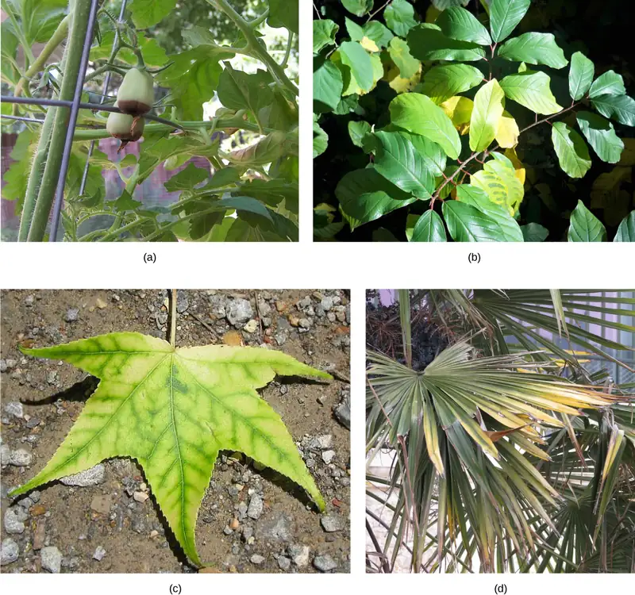
Everyday Connection: Hydroponics
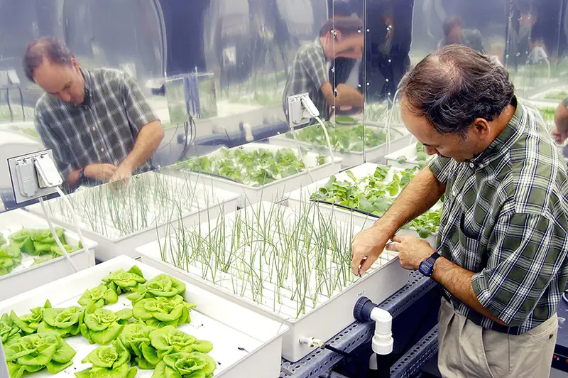
Hydroponics is a method of growing plants in a water-nutrient solution instead of soil. Since its advent, hydroponics has developed into a growing process that researchers often use. Scientists who are interested in studying plant nutrient deficiencies can use hydroponics to study the effects of different nutrient combinations under strictly controlled conditions. Hydroponics has also developed as a way to grow flowers, vegetables, and other crops in greenhouse environments. You might find hydroponically grown produce at your local grocery store. Today, many lettuces and tomatoes in your market have been hydroponically grown.
31.2 The Soil¶
Learning Objectives
By the end of this section, you will be able to do the following:
- Describe how soils are formed
- Explain soil composition
- Describe a soil profile
Plants obtain inorganic elements from the soil, which serves as a natural medium for land plants. Soil is the outer loose layer that covers the surface of Earth. Soil quality is a major determinant, along with climate, of plant distribution and growth. Soil quality depends not only on the chemical composition of the soil, but also the topography (regional surface features) and the presence of living organisms. In agriculture, the history of the soil, such as the cultivating practices and previous crops, modify the characteristics and fertility of that soil.
Soil develops very slowly over long periods of time, and its formation results from natural and environmental forces acting on mineral, rock, and organic compounds. Soils can be divided into two groups: organic soils are those that are formed from sedimentation and primarily composed of organic matter, while those that are formed from the weathering of rocks and are primarily composed of inorganic material are called mineral soils. Mineral soils are predominant in terrestrial ecosystems, where soils may be covered by water for part of the year or exposed to the atmosphere.
Soil Composition¶
Soil consists of these major components (Figure 31.6):
- inorganic mineral matter, about 40 to 45 percent of the soil volume
- organic matter, about 5 percent of the soil volume
- water and air, about 50 percent of the soil volume
The amount of each of the four major components of soil depends on the amount of vegetation, soil compaction, and water present in the soil. A good healthy soil has sufficient air, water, minerals, and organic material to promote and sustain plant life.
Visual Connection
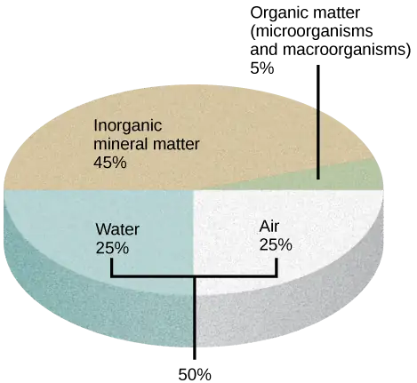
Soil compaction can result when soil is compressed by heavy machinery or even foot traffic. How might this compaction change the soil composition?
The organic material of soil, called humus, is made up of microorganisms (dead and alive), and dead animals and plants in varying stages of decay. Humus improves soil structure and provides plants with water and minerals. The inorganic material of soil consists of rock, slowly broken down into smaller particles that vary in size. Soil particles that are 0.1 to 2 mm in diameter are sand. Soil particles between 0.002 and 0.1 mm are called silt, and even smaller particles, less than 0.002 mm in diameter, are called clay. Some soils have no dominant particle size and contain a mixture of sand, silt, and humus; these soils are called loams.
Interactive
Explore this interactive map from the USDA’s National Cooperative Soil Survey to access soil data for almost any region in the United States.
Soil Formation¶
Soil formation is the consequence of a combination of biological, physical, and chemical processes. Soil should ideally contain 50 percent solid material and 50 percent pore space. About one-half of the pore space should contain water, and the other half should contain air. The organic component of soil serves as a cementing agent, returns nutrients to the plant, allows soil to store moisture, makes soil tillable for farming, and provides energy for soil microorganisms. Most soil microorganisms—bacteria, algae, or fungi—are dormant in dry soil, but become active once moisture is available.
Soil distribution is not homogenous because its formation results in the production of layers; together, the vertical section of a soil is called the soil profile. Within the soil profile, soil scientists define zones called horizons. A horizon is a soil layer with distinct physical and chemical properties that differ from those of other layers. Five factors account for soil formation: parent material, climate, topography, biological factors, and time.
Parent Material¶
The organic and inorganic material in which soils form is the parent material. Mineral soils form directly from the weathering of bedrock, the solid rock that lies beneath the soil, and therefore, they have a similar composition to the original rock. Other soils form in materials that came from elsewhere, such as sand and glacial drift. Materials located in the depth of the soil are relatively unchanged compared with the deposited material. Sediments in rivers may have different characteristics, depending on whether the stream moves quickly or slowly. A fast-moving river could have sediments of rocks and sand, whereas a slow-moving river could have fine-textured material, such as clay.
Climate¶
Temperature, moisture, and wind cause different patterns of weathering and therefore affect soil characteristics. The presence of moisture and nutrients from weathering will also promote biological activity: a key component of a quality soil.
Topography¶
Regional surface features (familiarly called “the lay of the land”) can have a major influence on the characteristics and fertility of a soil. Topography affects water runoff, which strips away parent material and affects plant growth. Steeps soils are more prone to erosion and may be thinner than soils that are relatively flat or level.
Biological factors¶
The presence of living organisms greatly affects soil formation and structure. Animals and microorganisms can produce pores and crevices, and plant roots can penetrate into crevices to produce more fragmentation. Plant secretions promote the development of microorganisms around the root, in an area known as the rhizosphere. Additionally, leaves and other material that fall from plants decompose and contribute to soil composition.
Time¶
Time is an important factor in soil formation because soils develop over long periods. Soil formation is a dynamic process. Materials are deposited over time, decompose, and transform into other materials that can be used by living organisms or deposited onto the surface of the soil.
Physical Properties of the Soil¶
Soils are named and classified based on their horizons. The soil profile has four distinct layers: 1) O horizon; 2) A horizon; 3) B horizon, or subsoil; and 4) C horizon, or soil base (Figure 31.7). The O horizon has freshly decomposing organic matter—humus—at its surface, with decomposed vegetation at its base. Humus enriches the soil with nutrients and enhances soil moisture retention. Topsoil—the top layer of soil—is usually two to three inches deep, but this depth can vary considerably. For instance, river deltas like the Mississippi River delta have deep layers of topsoil. Topsoil is rich in organic material; microbial processes occur there, and it is the “workhorse” of plant production. The A horizon consists of a mixture of organic material with inorganic products of weathering, and it is therefore the beginning of true mineral soil. This horizon is typically darkly colored because of the presence of organic matter. In this area, rainwater percolates through the soil and carries materials from the surface. The B horizon is an accumulation of mostly fine material that has moved downward, resulting in a dense layer in the soil. In some soils, the B horizon contains nodules or a layer of calcium carbonate. The C horizon, or soil base, includes the parent material, plus the organic and inorganic material that is broken down to form soil. The parent material may be either created in its natural place, or transported from elsewhere to its present location. Beneath the C horizon lies bedrock.
Visual Connection
![Illustration shows a cross-section of soil layers, or horizons. The top layer, from zero to two inches, is the O horizon. The O horizon is a rich, deep brown color. From two to ten inches is the A horizon. This layer is slightly lighter in color than the O horizon, and extensive root systems are visible. From ten to thirty inches is the B horizon. The B horizon is reddish brown. Longer roots extend to the bottom of this layer. The C horizon extends from 30 to 48 inches. This layer is rocky and devoid of roots.](img/figure-31-02-02.webp)
Which horizon is considered the topsoil, and which is considered the subsoil?
Some soils may have additional layers, or lack one of these layers. The thickness of the layers is also variable, and depends on the factors that influence soil formation. In general, immature soils may have O, A, and C horizons, whereas mature soils may display all of these, plus additional layers (Figure 31.8).
![In the photo, soil has been cut away to reveal the soil profile. The O horizon is at the soil surface and is a rich black color. The brown A horizon starts beneath the O horizon and extends to about two-and-a-half feet beneath the surface. The B horizon is reddish brown and extends from the bottom of the A horizon to about two feet deep. The C horizon extends from the bottom of the B horizon to the bottom of the photo at a depth of four feet. The C horizon is light brown and has a coarser consistency than the A or B horizons.](img/figure-31-02-03.webp)
Career Connection: Soil Scientist
A soil scientist studies the biological components, physical and chemical properties, distribution, formation, and morphology of soils. Soil scientists need to have a strong background in physical and life sciences, plus a foundation in mathematics. They may work for federal or state agencies, academia, or the private sector. Their work may involve collecting data, carrying out research, interpreting results, inspecting soils, conducting soil surveys, and recommending soil management programs.
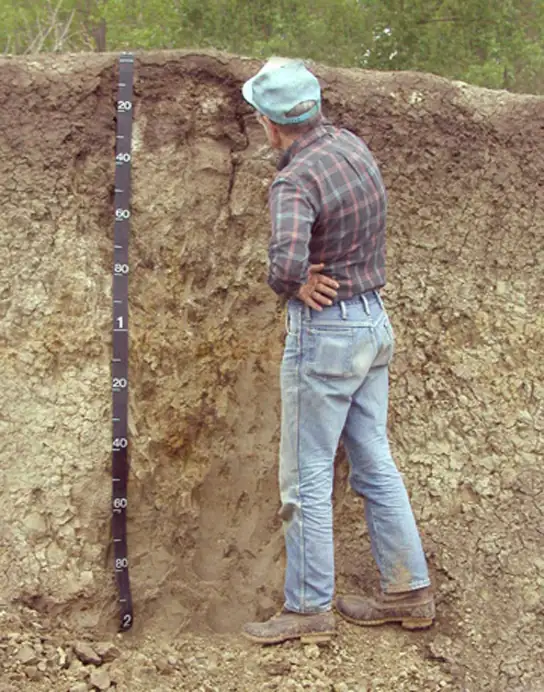
Many soil scientists work both in an office and in the field. According to the United States Department of Agriculture (USDA): “a soil scientist needs good observation skills to analyze and determine the characteristics of different types of soils. Soil types are complex and the geographical areas a soil scientist may survey are varied. Aerial photos or various satellite images are often used to research the areas. Computer skills and geographic information systems (GIS) help the scientist to analyze the multiple facets of geomorphology, topography, vegetation, and climate to discover the patterns left on the landscape.”1 Soil scientists play a key role in understanding the soil’s past, analyzing present conditions, and making recommendations for future soil-related practices.
31.3 Nutritional Adaptations of Plants¶
Learning Objectives
By the end of this section, you will be able to do the following:
- Understand the nutritional adaptations of plants
- Describe mycorrhizae
- Explain nitrogen fixation
Plants obtain food in two different ways. Autotrophic plants can make their own food from inorganic raw materials, such as carbon dioxide and water, through photosynthesis in the presence of sunlight. Green plants are included in this group. Some plants, however, are heterotrophic: they are totally parasitic and lacking in chlorophyll. These plants, referred to as holo-parasitic plants, are unable to synthesize organic carbon and draw all of their nutrients from the host plant.
Plants may also enlist the help of microbial partners in nutrient acquisition. Particular species of bacteria and fungi have evolved along with certain plants to create a mutualistic symbiotic relationship with roots. This improves the nutrition of both the plant and the microbe. The formation of nodules in legume plants and mycorrhization can be considered among the nutritional adaptations of plants. However, these are not the only type of adaptations that we may find; many plants have other adaptations that allow them to thrive under specific conditions.
Interactive
This video reviews basic concepts about photosynthesis. In the left panel, click each tab to select a topic for review.
Nitrogen Fixation: Root and Bacteria Interactions¶
Nitrogen is an important macronutrient because it is part of nucleic acids and proteins. Atmospheric nitrogen, which is the diatomic molecule N2, or dinitrogen, is the largest pool of nitrogen in terrestrial ecosystems. However, plants cannot take advantage of this nitrogen because they do not have the necessary enzymes to convert it into biologically useful forms. However, nitrogen can be “fixed,” which means that it can be converted to ammonia (NH3) through biological, physical, or chemical processes. As you have learned, biological nitrogen fixation (BNF) is the conversion of atmospheric nitrogen (N2) into ammonia (NH3), exclusively carried out by prokaryotes such as soil bacteria or cyanobacteria. Biological processes contribute 65 percent of the nitrogen used in agriculture. The following equation represents the process:
The most important source of BNF is the symbiotic interaction between soil bacteria and legume plants, including many crops important to humans (Figure 31.10). The NH3 resulting from fixation can be transported into plant tissue and incorporated into amino acids, which are then made into plant proteins. Some legume seeds, such as soybeans and peanuts, contain high levels of protein, and serve among the most important agricultural sources of protein in the world.
Visual Connection
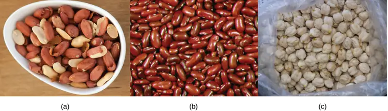
Farmers often rotate corn (a cereal crop) and soy beans (a legume), planting a field with each crop in alternate seasons. What advantage might this crop rotation confer?
Soil bacteria, collectively called rhizobia, symbiotically interact with legume roots to form specialized structures called nodules, in which nitrogen fixation takes place. This process entails the reduction of atmospheric nitrogen to ammonia, by means of the enzyme nitrogenase. Therefore, using rhizobia is a natural and environmentally friendly way to fertilize plants, as opposed to chemical fertilization that uses a nonrenewable resource, such as natural gas. Through symbiotic nitrogen fixation, the plant benefits from using an endless source of nitrogen from the atmosphere. The process simultaneously contributes to soil fertility because the plant root system leaves behind some of the biologically available nitrogen. As in any symbiosis, both organisms benefit from the interaction: the plant obtains ammonia, and bacteria obtain carbon compounds generated through photosynthesis, as well as a protected niche in which to grow (Figure 31.11).
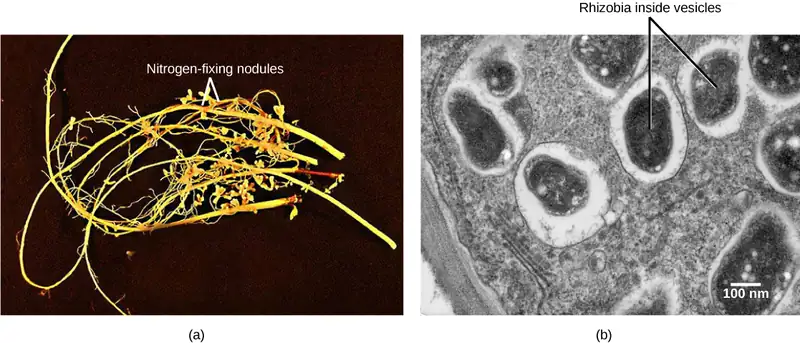
Mycorrhizae: The Symbiotic Relationship between Fungi and Roots¶
A nutrient depletion zone can develop when there is rapid soil solution uptake, low nutrient concentration, low diffusion rate, or low soil moisture. These conditions are very common; therefore, most plants rely on fungi to facilitate the uptake of minerals from the soil. Fungi form symbiotic associations called mycorrhizae with plant roots, in which the fungi actually are integrated into the physical structure of the root. The fungi colonize the living root tissue during active plant growth.
Through mycorrhization, the plant obtains mainly phosphate and other minerals, such as zinc and copper, from the soil. The fungus obtains nutrients, such as sugars, from the plant root (Figure 31.12). Mycorrhizae help increase the surface area of the plant root system because hyphae, which are narrow, can spread beyond the nutrient depletion zone. Hyphae can grow into small soil pores that allow access to phosphorus that would otherwise be unavailable to the plant. The beneficial effect on the plant is best observed in poor soils. The benefit to fungi is that they can obtain up to 20 percent of the total carbon accessed by plants. Mycorrhizae functions as a physical barrier to pathogens. It also provides an induction of generalized host defense mechanisms, and sometimes involves production of antibiotic compounds by the fungi.
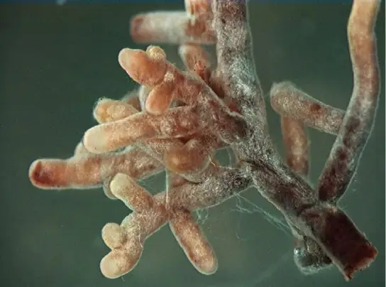
There are two types of mycorrhizae: ectomycorrhizae and endomycorrhizae. Ectomycorrhizae form an extensive dense sheath around the roots, called a mantle. Hyphae from the fungi extend from the mantle into the soil, which increases the surface area for water and mineral absorption. This type of mycorrhizae is found in forest trees, especially conifers, birches, and oaks. Endomycorrhizae, also called arbuscular mycorrhizae, do not form a dense sheath over the root. Instead, the fungal mycelium is embedded within the root tissue. Endomycorrhizae are found in the roots of more than 80 percent of terrestrial plants.
Nutrients from Other Sources¶
Some plants cannot produce their own food and must obtain their nutrition from outside sources. This may occur with plants that are parasitic or saprophytic. Some plants are mutualistic symbionts, epiphytes, or insectivorous.
Plant Parasites¶
A parasitic plant depends on its host for survival. Some parasitic plants have no leaves. An example of this is the dodder (Figure 31.13), which has a weak, cylindrical stem that coils around the host and forms suckers. From these suckers, cells invade the host stem and grow to connect with the vascular bundles of the host. The parasitic plant obtains water and nutrients through these connections. The plant is a total parasite (a holoparasite) because it is completely dependent on its host. Other parasitic plants (hemiparasites) are fully photosynthetic and only use the host for water and minerals. There are about 4,100 species of parasitic plants.
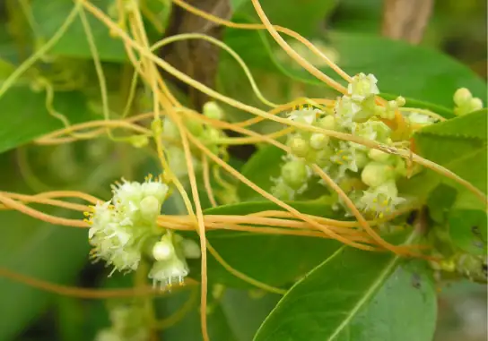
Saprophytes¶
A saprophyte is a plant that does not have chlorophyll and gets its food from dead matter, similar to bacteria and fungi (note that fungi are often called saprophytes, which is incorrect, because fungi are not plants). Plants like these use enzymes to convert organic food materials into simpler forms from which they can absorb nutrients (Figure 31.14). Most saprophytes do not directly digest dead matter: instead, they parasitize fungi that digest dead matter, or are mycorrhizal, ultimately obtaining photosynthate from a fungus that derived photosynthate from its host. Saprophytic plants are uncommon; only a few species are described.
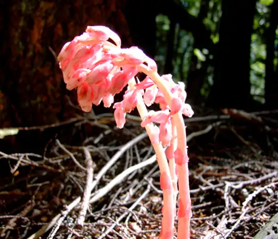
Symbionts¶
A symbiont is a plant in a symbiotic relationship, with special adaptations such as mycorrhizae or nodule formation (Figure 31.12 and Figure 31.11).
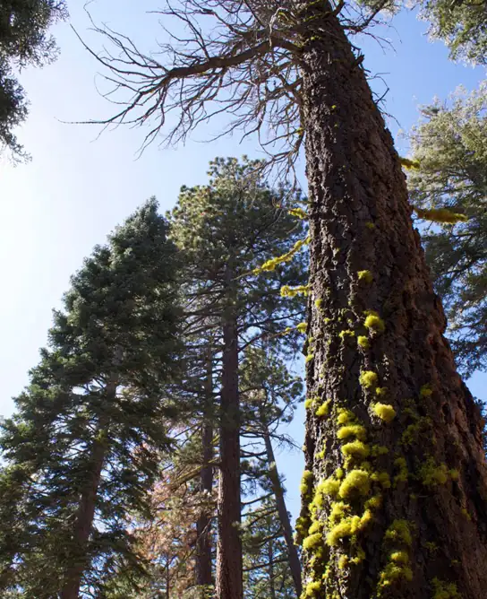
Epiphytes¶
An epiphyte is a plant that grows on other plants, but is not dependent upon the other plant for nutrition (Figure 31.16). Epiphytes have two types of roots: clinging aerial roots, which absorb nutrients from humus that accumulates in the crevices of trees; and aerial roots, which absorb moisture from the atmosphere.
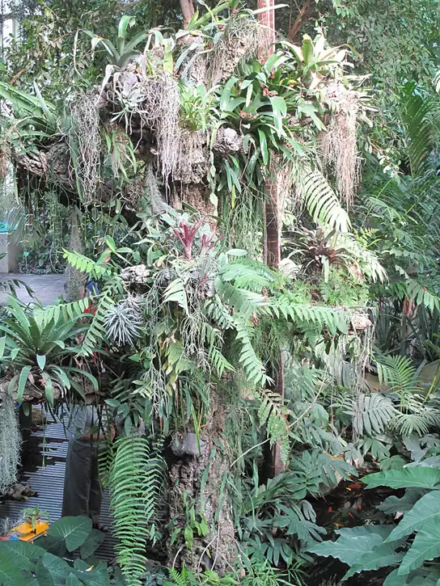
Insectivorous Plants¶
An insectivorous plant has specialized leaves to attract and digest insects. The Venus flytrap is popularly known for its insectivorous mode of nutrition, and has leaves that work as traps (Figure 31.17). The minerals it obtains from prey compensate for those lacking in the boggy (low pH) soil of its native North Carolina coastal plains. There are three sensitive hairs in the center of each half of each leaf. The edges of each leaf are covered with long spines. Nectar secreted by the plant attracts flies to the leaf. When a fly touches the sensory hairs, the leaf immediately closes. Next, fluids and enzymes break down the prey and minerals are absorbed by the leaf. Since this plant is popular in the horticultural trade, it is threatened in its original habitat.
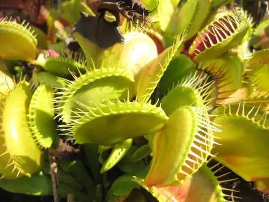
Chapter Review¶
Key Terms¶
- A horizon
- consists of a mixture of organic material with inorganic products of weathering
- B horizon
- soil layer that is an accumulation of mostly fine material that has moved downward
- bedrock
- solid rock that lies beneath the soil
- C horizon
- layer of soil that contains the parent material, and the organic and inorganic material that is broken down to form soil; also known as the soil base
- clay
- soil particles that are less than 0.002 mm in diameter
- epiphyte
- plant that grows on other plants but is not dependent upon other plants for nutrition
- horizon
- soil layer with distinct physical and chemical properties, which differs from other layers depending on how and when it was formed
- humus
- organic material of soil; made up of microorganisms, dead animals, and plants in varying stages of decay
- inorganic compound
- chemical compound that does not contain carbon; it is not part of or produced by a living organism
- insectivorous plant
- plant that has specialized leaves to attract and digest insects
- loam
- soil that has no dominant particle size
- macronutrient
- nutrient that is required in large amounts for plant growth; carbon, hydrogen, oxygen, nitrogen, phosphorus, potassium, calcium, magnesium, and sulfur
- micronutrient
- nutrient required in small amounts; also called trace element
- mineral soil
- type of soil that is formed from the weathering of rocks and inorganic material; composed primarily of sand, silt, and clay
- nitrogenase
- enzyme that is responsible for the reduction of atmospheric nitrogen to ammonia
- nodules
- specialized structures that contain Rhizobia bacteria where nitrogen fixation takes place
- O horizon
- layer of soil with humus at the surface and decomposed vegetation at the base
- organic compound
- chemical compound that contains carbon
- organic soil
- type of soil that is formed from sedimentation; composed primarily of organic material
- parasitic plant
- plant that is dependent on its host for survival
- parent material
- organic and inorganic material in which soils form
- rhizobia
- soil bacteria that symbiotically interact with legume roots to form nodules and fix nitrogen
- rhizosphere
- area of soil affected by root secretions and microorganisms
- sand
- soil particles between 0.1–2 mm in diameter
- saprophyte
- plant that does not have chlorophyll and gets its food from dead matter
- silt
- soil particles between 0.002 and 0.1 mm in diameter
- soil
- outer loose layer that covers the surface of Earth
- soil profile
- vertical section of a soil
- symbiont
- plant in a symbiotic relationship with bacteria or fungi
Summary¶
31.1 Nutritional Requirements of Plants¶
Plants can absorb inorganic nutrients and water through their root system, and carbon dioxide from the environment. The combination of organic compounds, along with water, carbon dioxide, and sunlight, produce the energy that allows plants to grow. Inorganic compounds form the majority of the soil solution. Plants access water though the soil. Water is absorbed by the plant root, transports nutrients throughout the plant, and maintains the structure of the plant. Essential elements are indispensable elements for plant growth. They are divided into macronutrients and micronutrients. The macronutrients plants require are carbon, nitrogen, hydrogen, oxygen, phosphorus, potassium, calcium, magnesium, and sulfur. Important micronutrients include iron, manganese, boron, molybdenum, copper, zinc, chlorine, nickel, cobalt, silicon, and sodium.
31.2 The Soil¶
Plants obtain mineral nutrients from the soil. Soil is the outer loose layer that covers the surface of Earth. Soil quality depends on the chemical composition of the soil, the topography, the presence of living organisms, the climate, and time. Agricultural practice and history may also modify the characteristics and fertility of soil. Soil consists of four major components: 1) inorganic mineral matter, 2) organic matter, 3) water and air, and 4) living matter. The organic material of soil is made of humus, which improves soil structure and provides water and minerals. Soil inorganic material consists of rock slowly broken down into smaller particles that vary in size, such as sand, silt, and loam.
Soil formation results from a combination of biological, physical, and chemical processes. Soil is not homogenous because its formation results in the production of layers called a soil profile. Factors that affect soil formation include: parent material, climate, topography, biological factors, and time. Soils are classified based on their horizons, soil particle size, and proportions. Most soils have four distinct horizons: O, A, B, and C.
31.3 Nutritional Adaptations of Plants¶
Atmospheric nitrogen is the largest pool of available nitrogen in terrestrial ecosystems. However, plants cannot use this nitrogen because they do not have the necessary enzymes. Biological nitrogen fixation (BNF) is the conversion of atmospheric nitrogen to ammonia. The most important source of BNF is the symbiotic interaction between soil bacteria and legumes. The bacteria form nodules on the legume’s roots in which nitrogen fixation takes place. Fungi form symbiotic associations (mycorrhizae) with plants, becoming integrated into the physical structure of the root. Through mycorrhization, the plant obtains minerals from the soil and the fungus obtains photosynthate from the plant root. Ectomycorrhizae form an extensive dense sheath around the root, while endomycorrhizae are embedded within the root tissue. Some plants—parasites, saprophytes, symbionts, epiphytes, and insectivores—have evolved adaptations to obtain their organic or mineral nutrition from various sources.
Review Questions¶
31.1 Nutritional Requirements of Plants¶
1. For an element to be regarded as essential, all of the following criteria must be met, except:
- No other element can perform the function.
- The element is directly involved in plant nutrition.
- The element is inorganic.
- The plant cannot complete its lifecycle without the element.
Answer
C
2. The nutrient that is part of carbohydrates, proteins, and nucleic acids, and that forms biomolecules, is ________.
- nitrogen
- carbon
- magnesium
- iron
Answer
B
3. Most ________ are necessary for enzyme function.
- micronutrients
- macronutrients
- biomolecules
- essential nutrients
Answer
A
4. What is the main water source for land plants?
- rain
- soil
- biomolecules
- essential nutrients
Answer
B
31.2 The Soil¶
5. Which factors affect soil quality?
- chemical composition
- history of the soil
- presence of living organisms and topography
- all of the above
Answer
D
6. Soil particles that are 0.1 to 2 mm in diameter are called ________.
- sand
- silt
- clay
- loam
Answer
A
7. A soil consists of layers called ________ that taken together are called a ________.
- soil profiles : horizon
- horizons : soil profile
- horizons : humus
- humus : soil profile
Answer
B
8. What is the term used to describe the solid rock that lies beneath the soil?
- sand
- bedrock
- clay
- loam
Answer
B
31.3 Nutritional Adaptations of Plants¶
9. Which process produces an inorganic compound that plants can easily use?
- photosynthesis
- nitrogen fixation
- mycorrhization
- Calvin cycle
Answer
B
10. Through mycorrhization, a plant obtains important nutrients such as ________.
- phosphorus, zinc, and copper
- phosphorus, zinc, and calcium
- nickel, calcium, and zinc
- all of the above
Answer
A
11. What term describes a plant that requires nutrition from a living host plant?
- parasite
- saprophyte
- epiphyte
- insectivorous
Answer
A
12. What is the term for the symbiotic association between fungi and cyanobacteria?
- lichen
- mycorrhizae
- epiphyte
- nitrogen-fixing nodule
Answer
A
Critical Thinking Questions¶
31.1 Nutritional Requirements of Plants¶
13. What type of plant problems result from nitrogen and calcium deficiencies?
Answer
Deficiencies in these nutrients could result in stunted growth, slow growth, and chlorosis.
14. Research the life of Jan Babtista van Helmont. What did the van Helmont experiment show?
Answer
van Helmont showed that plants do not consume soil, which is correct. He also thought that plant growth and increased weight resulted from the intake of water, a conclusion that has since been disproven.
15. List two essential macronutrients and two essential micro nutrients.
Answer
Answers may vary. Essential macronutrients include carbon, hydrogen, oxygen, nitrogen, phosphorus, potassium, calcium, magnesium, and sulfur. Essential micronutrients include iron, manganese, boron, molybdenum, copper, zinc, chlorine, nickel, cobalt, sodium, and silicon.
31.2 The Soil¶
16. Describe the main differences between a mineral soil and an organic soil.
Answer
A mineral soil forms from the weathering of rocks; it is inorganic material. An organic soil is formed from sedimentation; it mostly consists of humus.
17. Name and briefly explain the factors that affect soil formation.
Answer
Parent material, climate, topography, biological factors, and time affect soil formation. Parent material is the material in which soils form. Climate describes how temperature, moisture, and wind cause different patterns of weathering, influencing the characteristics of the soil. Topography affects the characteristics and fertility of a soil. Biological factors include the presence of living organisms that greatly affect soil formation. Processes such as freezing and thawing may produce cracks in rocks; plant roots can penetrate these crevices and produce more fragmentation. Time affects soil because soil develops over long periods.
18. Describe how topography influences the characteristics and fertility of a soil.
Answer
Topography affects water runoff, which strips away parent material and affects plant growth. Steeps soils are more prone to erosion and may be thinner than soils that are on level surfaces.
31.3 Nutritional Adaptations of Plants¶
19. Why is biological nitrogen fixation an environmentally friendly way of fertilizing plants?
Answer
Because it is natural and does not require use of a nonrenewable resource, such as natural gas.
20. What is the main difference, from an energy point of view, between photosynthesis and biological nitrogen fixation?
Answer
Photosynthesis harvests and stores energy, whereas biological nitrogen fixation requires energy.
21. Why is a root nodule a nutritional adaptation of a plant?
Answer
A nodule results from the symbiosis between a plant and bacterium. Within nodules, the process of nitrogen fixation allows the plant to obtain nitrogen from the air.
Visual Connection Questions¶
31.2 The Soil¶
22. Figure 31.6 Soil compaction can result when soil is compressed by heavy machinery or even foot traffic. How might this compaction change the soil composition?
Answer
Figure 31.6 The air content of the soil decreases.
23. Figure 31.7 Which horizon is considered the topsoil, and which is considered the subsoil?
Answer
Figure 31.7 The A horizon is the topsoil, and the B horizon is subsoil.
31.3 Nutritional Adaptations of Plants¶
24. Figure 31.10 Farmers often rotate corn (a cereal crop) and soy beans (a legume) planting a field with each crop in alternate seasons. What advantage might this crop rotation confer?
Answer
Figure 31.10 Soybeans are able to fix nitrogen in their roots, which are not harvested at the end of the growing season. The belowground nitrogen can be used in the next season by the corn.
Adapted from Biology 2e by OpenStax, licensed under CC BY 4.0. Access the original for free at openstax.org. Changes: converted to the web reading format of The Open Book Project.
-
National Resources Conservation Service / United States Department of Agriculture. “Careers in Soil Science.” https://openstax.org/l/NRCS ↩